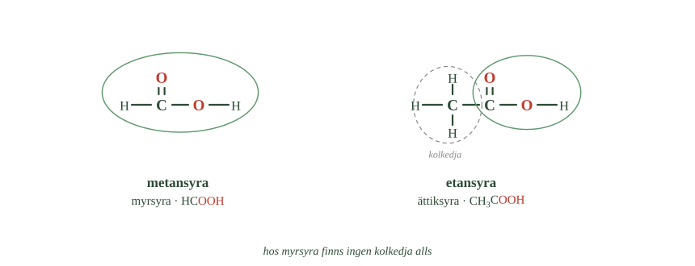
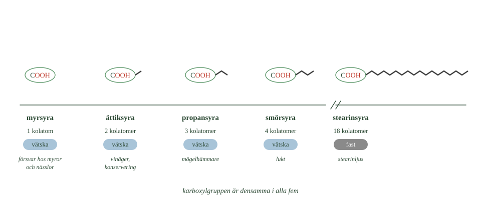
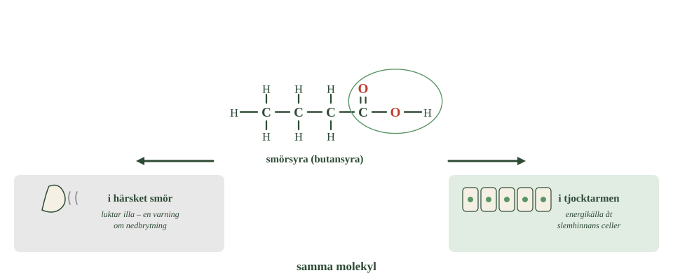

- Hur många kolatomer har myrsyra, och var sitter den?
- Varför heter myrsyra som den gör?
- Hur mycket ättiksyra innehåller vanlig vinäger?
- Varför håller inlagda livsmedel längre?
- Vad händer med syrans egenskaper när kolkedjan blir längre?
Alla organiska syror har samma funktionella grupp: karboxylgruppen, –COOH.
Det som skiljer dem åt är resten av molekylen.
Hos den enklaste syran finns ingen kolkedja alls utanför gruppen. Andra har mycket långa kedjor — upp till arton kolatomer.
Därför kan ämnen i samma grupp bete sig helt olika. Några smakar surt och löser sig i vatten. Andra är oljiga eller till och med fasta. De används till allt från konservering och läkemedel till stearinljus.
Metansyra kallas myrsyra
Den enklaste organiska syran heter metansyra, men nästan alla säger myrsyra.
Formeln är HCOOH.
- Hur många kolatomer finns innanför den gröna ringen i varje molekyl?
- Vad finns utanför ringen till höger?
- Var sitter de två väteatomerna i myrsyra?

Titta på den. Molekylen innehåller bara en kolatom, och den sitter i själva karboxylgruppen. Det finns alltså ingen kolkedja utanför gruppen — syran är bara gruppen och ingenting annat.
Varför den heter myrsyra
Namnet kommer av att vissa myror sprutar syran som försvar. Den ger en brännande känsla på huden.
Nässlornas brännhår innehåller också myrsyra. Det är delvis därför nässlor bränns.
Koncentrerad myrsyra är frätande och kan skada hud och ögon.
Myrsyra är den starkaste av de enkla organiska syrorna — men den räknas fortfarande som en svag syra.
Etansyra kallas ättiksyra
Nästa syra i serien heter etansyra, och kallas nästan alltid ättiksyra.
Formeln är \(\ce{CH3COOH}\).
Här finns två kolatomer: en i karboxylgruppen och en i kedjan.
Ättiksyra är det som ger vinäger dess sura smak och skarpa lukt. Vanlig vinäger innehåller ungefär fem till sex procent ättiksyra — resten är vatten.
Ättiksyra konserverar mat
Syran gör miljön sur, och många bakterier och mögelsvampar har svårt att växa i surt.
Det är därför inlagda gurkor, rödbetor och sill håller sig länge.
Ättiksyra används också som råvara när man tillverkar plast och lim.
Längre kedja, svagare syra
Karboxylgruppen är exakt likadan i alla organiska syror. Det är kolkedjan som skiljer dem.
Myrsyra, som saknar kedja helt, är något starkare än ättiksyra. Men skillnaden blir liten när kedjan fortsätter växa.
Det som ändras mest är i stället de andra egenskaperna.
Stearinsyra har arton kolatomer och beter sig inte alls som vinäger. Den är fast vid rumstemperatur och smakar inte surt.
Ju längre kedjan blir, desto mer bestämmer kolvätedelen hur ämnet beter sig — och desto mindre märks syran.
- Hur många kolatomer har myrsyra, och var sitter den?
- Varför heter myrsyra som den gör?
- Hur mycket ättiksyra innehåller vanlig vinäger?
- Varför håller inlagda livsmedel längre?
- Vad händer med syrans egenskaper när kolkedjan blir längre?
Alla organiska syror innehåller samma funktionella grupp: karboxylgruppen, –COOH. Det som varierar är resten av molekylen.
Hos den enklaste syran finns ingen kolkedja alls utanför gruppen. Andra har mycket långa kedjor.
Därför kan ämnen i samma grupp få helt olika egenskaper. Några smakar surt och löser sig i vatten. Andra är oljiga eller fasta. De används till allt från konservering och läkemedel till stearinljus.
Metansyra kallas myrsyra
Den enklaste organiska syran heter metansyra men kallas oftast myrsyra. Formeln är HCOOH.
Molekylen innehåller bara en kolatom, och den sitter i karboxylgruppen. Det finns alltså ingen kolkedja alls utanför gruppen.
Namnet kommer av att vissa myror sprutar syran som försvar. Den ger en brännande känsla, och koncentrerad myrsyra är frätande på hud och ögon. Nässlornas brännhår innehåller också myrsyra.
Myrsyra är den starkaste av de enkla organiska syrorna — men den räknas fortfarande som en svag syra.
Etansyra kallas ättiksyra
Nästa syra i serien är etansyra, som oftast kallas ättiksyra. Formeln är \(\ce{CH3COOH}\).
Molekylen har två kolatomer: en i karboxylgruppen och en i kedjan.
Ättiksyra är det som ger vinäger dess sura smak och lukt. Vanlig vinäger innehåller ungefär fem till sex procent ättiksyra.
Syran används för att konservera mat. Många mikroorganismer har svårt att växa när miljön blir tillräckligt sur, och det är därför inlagda livsmedel håller längre.
Ättiksyra är också råvara vid tillverkning av plast och lim.
Kolkedjan påverkar syrans styrka
Karboxylgruppen är densamma i alla organiska syror. Det som ändras är kolkedjan.
Myrsyra, som saknar kedja helt, är något starkare än ättiksyra och de följande syrorna. Men skillnaden blir liten när kedjan fortsätter växa.
Det som förändras mest är i stället de andra egenskaperna. Stearinsyra med arton kolatomer beter sig inte alls som vinäger — den är fast vid rumstemperatur och smakar inte surt.
Ju längre kedjan blir, desto mer bestämmer kolvätedelen hur ämnet beter sig.
Syrastyrkan avgörs av vad som drar i laddningen
Standardtexten säger att myrsyra är något starkare än ättiksyra, och att skillnaden blir liten när kedjan fortsätter växa. Båda delarna stämmer. Men varför kedjan alls spelar roll är värt att veta, eftersom förklaringen förutsäger mycket mer än de här två syrorna.
I fördjupningen till 1.1 såg du att en syras styrka avgörs av hur stabil jonen är. Ju bättre den negativa laddningen kan spridas ut, desto lättare avger syran sin vätejon.
En kolkedja gör motsatsen. Kol och väte skjuter ifrån sig elektroner en aning, och det trycker laddningen tillbaka mot syreatomerna i stället för bort från dem. Jonen blir en aning mindre stabil, och syran en aning svagare.
Myrsyra har ingen kedja alls och är därför starkast av dem.
Effekten heter induktiv effekt och avtar snabbt med avståndet. Redan vid tredje kolatomen märks den knappt, vilket är precis vad Standardtexten konstaterar.
Men effekten kan också gå åt andra hållet. Sätter man en kloratom på kolkedjan händer motsatsen — klor drar åt sig elektroner i stället, laddningen sprids bättre, och syran blir starkare.
Det går att räkna på. Ättiksyra har pKa 4,8. Byter man en väteatom mot klor sjunker det till 2,9. Med tre kloratomer hamnar det på 0,7 — en syra nästan lika stark som saltsyra, byggd av samma karboxylgrupp.
Om modellen. Standardnivån säger att kolkedjan gör syran svagare. Det stämmer, men den verkliga regeln är mer användbar: allt som drar elektroner från karboxylgruppen gör syran starkare, och allt som skjuter elektroner mot den gör den svagare. Kolkedjan är bara ett exempel på det andra.
- Var används propansyra, och varför?
- Vilken syra känner man igen på lukten, och var finns den?
- Varför reagerar vi så starkt på den lukten?
- Varför är stearinsyra fast vid rumstemperatur?
- Vad kallas de allra längsta organiska syrorna?
Propansyra hindrar mögel
Propansyra har tre kolatomer.
Den hämmar mögel och vissa bakterier. Därför används den som konserveringsmedel i bröd och i djurfoder.
Propansyra bildas också naturligt av bakterier i surdeg. Det är en av anledningarna till att surdegsbröd möglar långsammare än vanligt bröd.
Principen är densamma som hos ättiksyra: en organisk syra skapar en miljö där mikroorganismer har svårt att föröka sig.
Smörsyra luktar illa
Butansyra har fyra kolatomer och kallas oftast smörsyra.
Lukten är stark och omöjlig att ta miste på. Det är den du känner i härsket smör, och den finns också i svett.
Varför illalukt är nyttigt
Att vi reagerar så starkt på den lukten har en funktion.
Lukten betyder att organiskt material håller på att brytas ner. Luktsinnet fungerar alltså som ett kemiskt varningssystem — precis som den sura smaken varnar för omogen frukt.
Men ett ämne är inte dåligt bara för att det luktar illa. Samma molekyl möter vi snart igen i kroppen, och där gör den nytta.
Acetylsalicylsyra är ett läkemedel
Acetylsalicylsyra är en mycket större organisk syra med nio kolatomer.
Den används i läkemedel som är smärtstillande och febernedsättande.
Ämnet har en lång och märklig historia. Du kan läsa om den i djupdykningen.
Stearinsyra är fast
Stearinsyra har arton kolatomer.
Den långa kolkedjan gör att molekylerna håller fast hårt vid varandra. Därför är stearinsyra fast vid rumstemperatur.
- Jämför de gröna ringarna. Ser de likadana ut i alla fem?
- Vid vilken syra byter tillståndsraden färg?
- Varför finns det ett avbrott i skalan?

Det är samma samband som hos kolvätena i delkapitel 2: längre kedja betyder starkare krafter mellan molekylerna, och det betyder högre smältpunkt.
Stearinljus tillverkas av stearinsyra tillsammans med palmitinsyra, som har sexton kolatomer.
Så långa organiska syror kallas fettsyror. De kommer tillbaka i nästa avsnitt, eftersom de är byggstenar i fett.
- Var används propansyra, och varför?
- Vilken syra känner man igen på lukten, och var finns den?
- Varför reagerar vi så starkt på den lukten?
- Varför är stearinsyra fast vid rumstemperatur?
- Vad kallas de allra längsta organiska syrorna?
Propansyra hindrar mögel
Propansyra innehåller tre kolatomer.
Den hämmar tillväxten av mögel och vissa bakterier, och används därför som konserveringsmedel i bröd och i djurfoder.
Propansyra bildas också naturligt av bakterier i surdeg. Det bidrar till att surdegsbröd möglar långsammare.
Det är samma princip som hos ättiksyra: en organisk syra skapar en miljö där mikroorganismer har svårt att föröka sig.
Smörsyra luktar
Butansyra innehåller fyra kolatomer och kallas oftast smörsyra.
Ämnet har en mycket stark och lätt igenkännlig lukt. Det är en av de syror som ger härsket smör dess lukt, och det finns också i svett.
Att vi reagerar så starkt på sådana lukter har en funktion. Lukten signalerar att organiskt material håller på att brytas ner. Luktsinnet fungerar alltså som ett kemiskt varningssystem — precis som den sura smaken.
Men ett ämne är inte dåligt bara för att det luktar illa. Samma molekyl möter vi snart igen i kroppen, i en helt annan roll.
Acetylsalicylsyra är ett läkemedel
Acetylsalicylsyra är en betydligt större organisk syra med nio kolatomer.
Den används i läkemedel som är smärtstillande och febernedsättande.
Ämnet har en lång och märklig historia, som du kan läsa om i djupdykningen.
Stearinsyra är fast
Stearinsyra innehåller arton kolatomer. Den långa kolkedjan gör att molekylerna håller fast hårt vid varandra, och därför är ämnet fast vid rumstemperatur.
Det är samma samband som hos kolvätena: längre kedja, starkare krafter mellan molekylerna, högre smältpunkt.
Stearinljus tillverkas av stearinsyra tillsammans med palmitinsyra, som har sexton kolatomer.
Så långa organiska syror kallas fettsyror. De kommer tillbaka i nästa avsnitt, eftersom de är byggstenar i fett.
Kedjelängden avgör mer än smältpunkten
Standardtexten ordnar syrorna efter kedjelängd och konstaterar att de långa är fasta. Det är rätt, men mönstret är starkare än så — nästan allt hos en organisk syra följer kedjelängden.
Lukten gör det. Myrsyra och ättiksyra luktar skarpt och surt. Smörsyra med fyra kolatomer luktar härsket. Vid ungefär tio kolatomer slutar syrorna lukta alls, eftersom molekylerna blivit för tunga för att lämna vätskan och nå näsan.
Lösligheten gör det. Myrsyra och ättiksyra blandar sig med vatten i alla förhållanden. Smörsyra löser sig fortfarande. Vid sex kolatomer börjar det bli trögt, och stearinsyra löser sig i praktiken inte alls. Det är samma dragkamp som hos alkoholerna i delkapitel 4: karboxylgruppen är vattenvänlig, kolkedjan inte.
Smaken gör det. De korta smakar surt. De långa smakar ingenting alls — stearinsyra går att äta utan att man märker det.
De korta syrorna kallas därför ofta kortkedjiga fettsyror, och de beter sig som syror. De långa beter sig som fett. Gränsen går någonstans kring sex till tio kolatomer, och den är glidande.
Karboxylgruppen är hela tiden densamma. Det som ändras är hur stor del av molekylen den utgör.
Om modellen. Standardnivån behandlar kedjelängden som en förklaring till varför stearinsyra är fast. Men samma tal förklarar också lukten, lösligheten och smaken. När en enda variabel förklarar fyra egenskaper är det värt att lägga märke till — det betyder att man hittat något som verkligen styr.
- Var finns citronsyra, förutom i citrusfrukter?
- När bildas mjölksyra i musklerna?
- Vad bildas när kroppen brutit ner etanol färdigt?
- Vilka äter fibrerna som du själv inte kan bryta ner?
- Vad använder tjocktarmens celler smörsyran till?
Syror finns också inuti oss
Organiska syror finns inte bara i mat och i kemiska produkter.
De ingår också i kroppens egen ämnesomsättning — alltså i de reaktioner som pågår i cellerna hela tiden.
Citronsyra och mjölksyra
Citronsyra finns naturligt i citrusfrukter och ger dem deras sura smak. Men den finns också i dina egna celler, där den har en viktig roll när energi utvinns ur maten.
Mjölksyra bildas i musklerna vid mycket hårt arbete, när syret inte räcker till.
Det påminner om jäsningen du mötte i förra delkapitlet. Cellen fortsätter få fram energi trots att syret tryter — men slutprodukten blir en annan än vid vanlig cellandning.
Ättiksyra bildas när kroppen bryter ner etanol
När kroppen bryter ner etanol bildas till slut ättiksyra.
Den kan sedan användas vidare i ämnesomsättningen, ungefär som vilken näring som helst.
En alkohol kan alltså omvandlas till en organisk syra genom oxidation — precis som i 1.2, fast inuti kroppen i stället för i ett glas vin.
Smörsyra bildas i tarmen
Nu kommer smörsyran tillbaka.
Du kan inte själv bryta ner alla fibrer som finns i fullkorn, baljväxter och grönsaker. De passerar magsäcken och tunntarmen nästan oförändrade.
Men när fibrerna når tjocktarmen möter de bakterier. Och de kan bryta ner fibrerna och använda dem som näring.
När bakterierna gör det bildas bland annat smörsyra.
Samma molekyl, två helt olika roller
Smörsyran används sedan som energikälla av cellerna i tjocktarmens slemhinna. Den påverkar också tarmmiljön och immunförsvaret.
Det är alltså exakt samma molekyl som luktar härsket smör.
- Hur många molekyler finns i bilden?
- Jämför de två pilarna. Är någon av dem kraftigare?
- Var kommer smörsyran i tjocktarmen ifrån?

Utanför kroppen är lukten en varning om att något brutits ner. I tjocktarmen är smörsyran i stället en nyttig produkt av bakteriernas arbete.
Samma ämne kan betyda helt olika saker beroende på var det finns.
- Var finns citronsyra, förutom i citrusfrukter?
- När bildas mjölksyra i musklerna?
- Vad bildas när kroppen brutit ner etanol färdigt?
- Vilka äter fibrerna som du själv inte kan bryta ner?
- Vad använder tjocktarmens celler smörsyran till?
Citronsyra och mjölksyra
Organiska syror finns inte bara i mat och kemiska produkter. De ingår också i kroppens egen ämnesomsättning.
Citronsyra finns naturligt i citrusfrukter och ger dem deras sura smak. Den har också en viktig roll i cellernas energiomsättning.
Mjölksyra bildas i musklerna vid mycket hårt arbete, när syret inte räcker till.
Det påminner om jäsningen: cellen fortsätter få fram energi trots att syret tryter, men slutprodukten blir en annan än vid vanlig cellandning.
Ättiksyra bildas när kroppen bryter ner etanol
När kroppen bryter ner etanol bildas till slut ättiksyra, som kan användas vidare i ämnesomsättningen.
En alkohol kan alltså genom oxidation omvandlas till en organisk syra — precis som i 1.2, fast inuti kroppen.
Smörsyra bildas i tarmen
Människan kan inte själv bryta ner alla fibrer i fullkorn, baljväxter och grönsaker. När fibrerna når tjocktarmen kan bakterierna där använda dem som näring i stället.
När bakterierna bryter ner fibrerna bildas bland annat smörsyra.
Smörsyran används sedan som energikälla av cellerna i tjocktarmens slemhinna. Den påverkar också tarmmiljön och immunförsvaret.
Det är alltså exakt samma molekyl som vi nyss mötte i härsket smör.
Utanför kroppen är lukten en varningssignal om nedbrytning. I tjocktarmen är smörsyran i stället en nyttig produkt av bakteriernas arbete.
Samma ämne kan alltså betyda helt olika saker beroende på var det finns.
Tarmbakterierna gör något kroppen inte kan
Standardtexten säger att tarmbakterierna bildar smörsyra av fibrer, och att smörsyran blir energi åt tarmslemhinnans celler. Det stämmer. Men det märkliga med arrangemanget är lätt att missa.
Fibrer är till stor del cellulosa och liknande långa kolhydratkedjor. Du mötte dem i delkapitel 2 — cellulosa är en polymer av glukos.
Glukos är den bästa energikälla kroppen har. Fibrerna är alltså gjorda av precis det din kropp helst vill ha.
Ändå kan du inte komma åt det. Kroppen saknar enzym som klipper de bindningar som håller ihop cellulosans glukosenheter. Maten passerar orörd genom magsäck och tunntarm.
I tjocktarmen finns däremot bakterier som har enzymet. De bryter ner fibrerna, använder energin — och lämnar ifrån sig kortkedjiga fettsyror som avfall. Smörsyra är en av dem.
Och det avfallet är precis vad tarmslemhinnans celler lever av. De cellerna tar ungefär sjuttio procent av sin energi från smörsyra, inte från blodets glukos.
Det är alltså ett utbyte. Du ger bakterierna mat du inte kan smälta. De ger dig tillbaka något du kan använda.
Att slemhinnans celler valt just smörsyra är rimligt av en enkel anledning: den finns på plats. En cell som sitter i tarmväggen har smörsyra utanför sig hela tiden, medan glukos måste hämtas ur blodet på andra sidan.
Om modellen. "Bakterierna bildar smörsyra som vi har nytta av" låter som en biprodukt vi råkar utnyttja. Förhållandet är äldre och tätare än så. Tarmcellerna har anpassat sig till en energikälla som bara finns om bakterierna är där — och därför är fibrer i maten inte näring åt dig, utan åt dem.
Laddar övningskort…
Laddar frågor ...